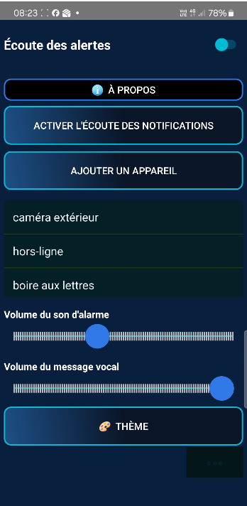

AlerteMarc transforme les notifications discrètes de vos appareils connectés en alertes sonores puissantes et messages vocaux. Ne manquez plus jamais une alarme importante.
AlerteMarc est une application conçue pour lire les notifications de votre téléphone et envoyer un message sonore ou vocal vers vos caméras connectées, agissant ainsi comme un signal d'alarme efficace.